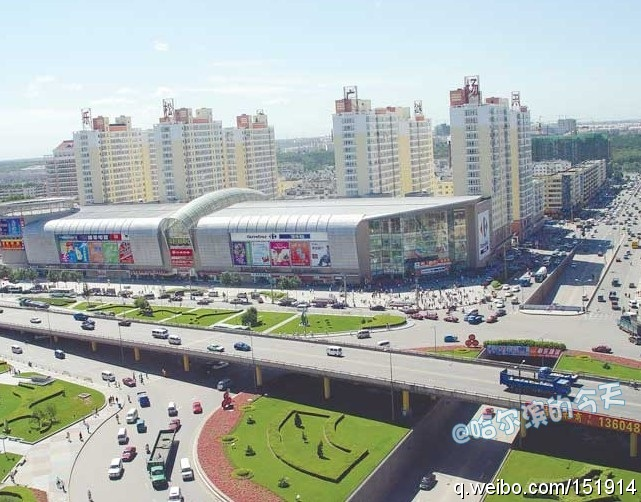

我家就在孙家站旁边。 //@海南律师兼职教授:三大动力当时建在哈市郊区，后来扩展为市区，孙家站成了市郊区分界点。 //@王秋实律师：动力本就是哈尔滨作为老工业基地的历史见证之一，三大动力，中国动力之乡。就让这现在的非官方名称一直保留下去吧@哈尔滨的今天:【地名由来：#香坊#区】香坊区是哈尔滨市的发祥地之一，曾为金国内地的“皇室禁苑”。清代嘉庆年间有河北乐亭的李姓人家，来此定居后开了个专做线香的手工作坊，其楼门上刻有“香坊”二字，因此得名。人们又称香坊一带为“老哈尔滨”。2006年8月与动力区合并为新香坊区。有香坊区的朋友吗？ 